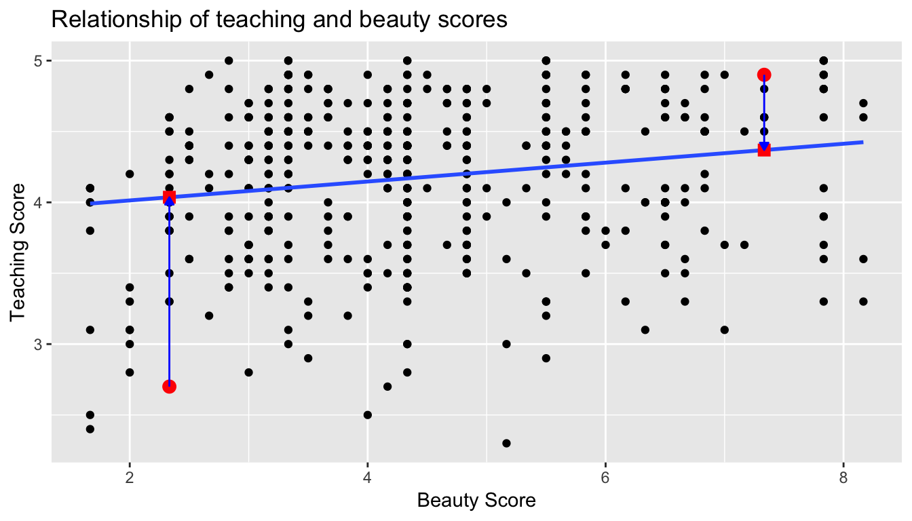

Chapter 6 Basic Regression
Now that we are equipped with data visualization skills from Chapter 3, an understanding of the “tidy” data format from Chapter 5, and data wrangling skills from Chapter 4, we now proceed with data modeling. The fundamental premise of data modeling is to make explicit the relationship between:
- an outcome variable \(y\), also called a dependent variable and
- an explanatory/predictor variable \(x\), also called an independent variable or covariate.
Another way to state this is using mathematical terminology: we will model the outcome variable \(y\) as a function of the explanatory/predictor variable \(x\). Why do we have two different labels, explanatory and predictor, for the variable \(x\)? That’s because roughly speaking data modeling can be used for two purposes:
- Modeling for prediction: You want to predict an outcome variable \(y\) based on the information contained in a set of predictor variables. You don’t care so much about understanding how all the variables relate and interact, but so long as you can make good predictions about \(y\), you’re fine. For example, if we know many individuals’ risk factors for lung cancer, such as smoking habits and age, can we predict whether or not they will develop lung cancer? Here we wouldn’t care so much about distinguishing the degree to which the different risk factors contribute to lung cancer, but instead only on whether or not they could be put together to make reliable predictions.
- Modeling for explanation: You want to explicitly describe the relationship between an outcome variable \(y\) and a set of explanatory variables, determine the significance of any found relationships, and have measures summarizing these. Continuing our example from above, we would now be interested in describing the individual effects of the different risk factors and quantifying the magnitude of these effects. One reason could be to design an intervention to reduce lung cancer cases in a population, such as targeting smokers of a specific age group with an advertisement for smoking cessation programs. In this book, we’ll focus more on this latter purpose.
Data modeling is used in a wide variety of fields, including statistical inference, causal inference, artificial intelligence, and machine learning. There are many techniques for data modeling, such as tree-based models, neural networks and deep learning, and supervised learning. In this chapter, we’ll focus on one particular technique: linear regression, one of the most commonly-used and easy-to-understand approaches to modeling. Recall our discussion in Subsection 2.4.3 on numerical and categorical variables. Linear regression involves:
- an outcome variable \(y\) that is numerical and
- explanatory variables \(\vec{x}\) that are either numerical or categorical.
With linear regression there is always only one numerical outcome variable \(y\) but we have choices on both the number and the type of explanatory variables \(\vec{x}\) to use. We’re going to cover the following regression scenarios:
- In this current chapter on basic regression, we’ll always have only one explanatory variable.
- In the next chapter, Chapter 7 on multiple regression, we’ll have more than one explanatory variable:
- We’ll focus on two numerical explanatory variables \(x_1\) and \(x_2\) in Section 7.1. This can be denoted as \(\vec{x}\) as well since we have more than one explanatory variable.
- We’ll use one numerical and one categorical explanatory variable in Section 7.1. We’ll also introduce interaction models here; there, the effect of one explanatory variable depends on the value of another.
We’ll study all four of these regression scenarios using real data, all easily accessible via R packages!
Needed packages
In this chapter we introduce a new package, moderndive, that is an accompaniment package to this ModernDive book. It includes useful functions for linear regression and other functions as well as data used later in the book. Let’s now load all the packages needed for this chapter. If needed, read Section 2.3 for information on how to install and load R packages.
library(ggplot2)
library(dplyr)
library(moderndive)
library(gapminder)
library(skimr)6.1 One numerical explanatory variable
Why do some professors and instructors at universities and colleges get high teaching evaluations from students while others don’t? What factors can explain these differences? Are there biases? These are questions that are of interest to university/college administrators, as teaching evaluations are among the many criteria considered in determining which professors and instructors should get promotions. Researchers at the University of Texas in Austin, Texas (UT Austin) tried to answer this question: what factors can explain differences in instructor’s teaching evaluation scores? To this end, they collected information on \(n = 463\) instructors. A full description of the study can be found at openintro.org.
We’ll keep things simple for now and try to explain differences in instructor evaluation scores as a function of one numerical variable: their “beauty score.” The specifics on how this score was calculated will be described shortly.
Could it be that instructors with higher beauty scores also have higher teaching evaluations? Could it be instead that instructors with higher beauty scores tend to have lower teaching evaluations? Or could it be there is no relationship between beauty score and teaching evaluations?
We’ll achieve ways to address these questions by modeling the relationship between these two variables with a particular kind of linear regression called simple linear regression. Simple linear regression is the most basic form of linear regression. With it we have
- A numerical outcome variable \(y\). In this case, their teaching score.
- A single numerical explanatory variable \(x\). In this case, their beauty score.
6.1.1 Exploratory data analysis
A crucial step before doing any kind of modeling or analysis is performing an exploratory data analysis, or EDA, of all our data. Exploratory data analysis can give you a sense of the distribution of the data, and whether there are outliers and/or missing values. Most importantly, it can inform how to build your model. There are many approaches to exploratory data analysis; here are three:
- Most fundamentally: just looking at the raw values, in a spreadsheet for example. While this may seem trivial, many people ignore this crucial step!
- Computing summary statistics like means, medians, and standard deviations.
- Creating data visualizations.
Let’s load the data, select only a subset of the variables, and look at the raw values. Recall you can look at the raw values by running View() in the console in RStudio to pop-up the spreadsheet viewer with the data frame of interest as the argument to View(). Here, however, we present only a snapshot of five randomly chosen rows:
evals_ch6 <- evals %>%
select(score, bty_avg, age)evals_ch6 %>%
sample_n(5)| score | bty_avg | age |
|---|---|---|
| 3.6 | 6.67 | 34 |
| 4.9 | 3.50 | 43 |
| 3.3 | 2.33 | 47 |
| 4.4 | 4.67 | 33 |
| 4.7 | 3.67 | 60 |
While a full description of each of these variables can be found at openintro.org, let’s summarize what each of these variables represents.
score: Numerical variable of the average teaching score based on students’ evaluations between 1 and 5. This is the outcome variable \(y\) of interest.bty_avg: Numerical variable of average “beauty” rating based on a panel of 6 students’ scores between 1 and 10. This is the numerical explanatory variable \(x\) of interest. Here 1 corresponds to a low beauty rating and 10 to a high beauty rating.age: A numerical variable of age in years as an integer value.
Another way to look at the raw values is using the glimpse() function, which gives us a slightly different view of the data. We see Observations: 463, indicating that there are 463 observations in evals, each corresponding to a particular instructor at UT Austin. Expressed differently, each row in the data frame evals corresponds to one of 463 instructors.
glimpse(evals_ch6)Observations: 463
Variables: 3
$ score <dbl> 4.7, 4.1, 3.9, 4.8, 4.6, 4.3, 2.8, 4.1, 3.4, 4.5, 3.8, 4.5, 4…
$ bty_avg <dbl> 5.00, 5.00, 5.00, 5.00, 3.00, 3.00, 3.00, 3.33, 3.33, 3.17, 3…
$ age <int> 36, 36, 36, 36, 59, 59, 59, 51, 51, 40, 40, 40, 40, 40, 40, 4…Since both the outcome variable score and the explanatory variable bty_avg are numerical, we can compute summary statistics about them such as the mean, median, and standard deviation. Let’s take evals_ch6 and select only the two variables of interest for now. However, let’s instead pipe this into the skim() function from the skimr package. This function quickly uses a “skim” of the data to return the following summary information about each variable.
evals_ch6 %>%
select(score, bty_avg) %>%
skim()Skim summary statistics
n obs: 463
n variables: 2
| variable | missing | complete | n | mean | sd | p0 | p25 | p50 | p75 | p100 | hist |
|---|---|---|---|---|---|---|---|---|---|---|---|
| bty_avg | 0 | 463 | 463 | 4.42 | 1.53 | 1.67 | 3.17 | 4.33 | 5.5 | 8.17 | ▂▅▅▇▃▃▂▁ |
| score | 0 | 463 | 463 | 4.17 | 0.54 | 2.3 | 3.8 | 4.3 | 4.6 | 5 | ▁▁▂▃▅▇▇▆ |
In this case for our two numerical variables bty_avg beauty score and teaching score score it returns:
missing: the number of missing valuescomplete: the number of non-missing or complete valuesn: the total number of valuesmean: the averagesd: the standard deviationp0: the 0th percentile: the value at which 0% of observations are smaller than it. This is also known as the minimump25: the 25th percentile: the value at which 25% of observations are smaller than it. This is also known as the 1st quartilep50: the 50th percentile: the value at which 50% of observations are smaller than it. This is also know as the 2nd quartile and more commonly the medianp75: the 75th percentile: the value at which 75% of observations are smaller than it. This is also known as the 3rd quartilep100: the 100th percentile: the value at which 100% of observations are smaller than it. This is also known as the maximum- A quick snapshot of the
histogram
We get an idea of how the values in both variables are distributed. For example, the mean teaching score was 4.17 out of 5 whereas the mean beauty score was 4.42 out of 10. Furthermore, the middle 50% of teaching scores were between 3.80 and 4.6 (the first and third quartiles) while the middle 50% of beauty scores were between 3.17 and 5.5 out of 10.
The skim() function however only returns what are called univariate summaries, i.e. summaries about single variables at a time. Since we are considering the relationship between two numerical variables, it would be nice to have a summary statistic that simultaneously considers both variables. The correlation coefficient is a bivariate summary statistic that fits this bill. Coefficients in general are quantitative expressions of a specific property of a phenomenon. A correlation coefficient is a quantitative expression between -1 and 1 that summarizes the strength of the linear relationship between two numerical variables:
- -1 indicates a perfect negative relationship: as the value of one variable goes up, the value of the other variable tends to go down.
- 0 indicates no relationship: the values of both variables go up/down independently of each other.
- +1 indicates a perfect positive relationship: as the value of one variable goes up, the value of the other variable tends to go up as well.
Figure 6.1 gives examples of different correlation coefficient values for hypothetical numerical variables \(x\) and \(y\). We see that while for a correlation coefficient of -0.75 there is still a negative relationship between \(x\) and \(y\), it is not as strong as the negative relationship between \(x\) and \(y\) when the correlation coefficient is -1.

FIGURE 6.1: Different correlation coefficients
The correlation coefficient is computed using the get_correlation() function in the moderndive package, where in this case the inputs to the function are the two numerical variables from which we want to calculate the correlation coefficient. We place the name of the response variable on the left hand side of the ~ and the explanatory variable on the right hand side of the “tilde.” We will use this same “formula” syntax with regression later in this chapter.
evals_ch6 %>%
get_correlation(formula = score ~ bty_avg)# A tibble: 1 x 1
correlation
<dbl>
1 0.187The correlation coefficient can also be computed using the cor() function, where in this case the inputs to the function are the two numerical variables from which we want to calculate the correlation coefficient. Recall from Subsection 2.4.3 that the $ pulls out specific variables from a data frame:
cor(x = evals_ch6$bty_avg, y = evals_ch6$score)[1] 0.187In our case, the correlation coefficient of 0.187 indicates that the relationship between teaching evaluation score and beauty average is “weakly positive.” There is a certain amount of subjectivity in interpreting correlation coefficients, especially those that aren’t close to -1, 0, and 1. For help developing such intuition and more discussion on the correlation coefficient see Subsection 6.3.1 below.
Let’s now proceed by visualizing this data. Since both the score and bty_avg variables are numerical, a scatterplot is an appropriate graph to visualize this data. Let’s do this using geom_point() and set informative axes labels and title and display the result in Figure 6.2.
ggplot(evals_ch6, aes(x = bty_avg, y = score)) +
geom_point() +
labs(x = "Beauty Score", y = "Teaching Score",
title = "Relationship of teaching and beauty scores")
FIGURE 6.2: Instructor evaluation scores at UT Austin
Observe the following:
- Most “beauty” scores lie between 2 and 8.
- Most teaching scores lie between 3 and 5.
- Recall our earlier computation of the correlation coefficient, which describes the strength of the linear relationship between two numerical variables. Looking at Figure 6.3, it is not immediately apparent that these two variables are positively related. This is to be expected given the positive, but rather weak (close to 0), correlation coefficient of 0.187.
Before we continue, we bring to light an important fact about this dataset: it suffers from overplotting. Recall from the data visualization Subsection 3.3.2 that overplotting occurs when several points are stacked directly on top of each other thereby obscuring the number of points. For example, let’s focus on the 6 points in the top-right of the plot with a beauty score of around 8 out of 10: are there truly only 6 points, or are there many more just stacked on top of each other? You can think of these as ties. Let’s break up these ties with a little random “jitter” added to the points in Figure 6.3.
FIGURE 6.3: Instructor evaluation scores at UT Austin: Jittered
Jittering adds a little random bump to each of the points to break up these ties: just enough so you can distinguish them, but not so much that the plot is overly altered. Furthermore, jittering is strictly a visualization tool; it does not alter the original values in the dataset.
Let’s compare side-by-side the regular scatterplot in Figure 6.2 with the jittered scatterplot in Figure 6.3 in Figure 6.4.
FIGURE 6.4: Comparing regular and jittered scatterplots.
We make several further observations:
- Focusing our attention on the top-right of the plot again, as noted earlier where there seemed to only be 6 points in the regular scatterplot, we see there were in fact really 9 as seen in the jittered scatterplot.
- A further interesting trend is that the jittering revealed a large number of instructors with beauty scores of between 3 and 4.5, towards the lower end of the beauty scale.
To keep things simple in this chapter, we’ll present regular scatterplots rather than the jittered scatterplots, though we’ll keep the overplotting in mind whenever looking at such plots. Going back to scatterplot in Figure 6.2, let’s improve on it by adding a “regression line” in Figure 6.5. This is easily done by adding a new layer to the ggplot code that created Figure 6.3: + geom_smooth(method = "lm"). A regression line is a “best fitting” line in that of all possible lines you could draw on this plot, it is “best” in terms of some mathematical criteria. We discuss the criteria for “best” in Subsection 6.3.3 below, but we suggest you read this only after covering the concept of a residual coming up in Subsection 6.1.3.
ggplot(evals_ch6, aes(x = bty_avg, y = score)) +
geom_point() +
labs(x = "Beauty Score", y = "Teaching Score",
title = "Relationship of teaching and beauty scores") +
geom_smooth(method = "lm")
FIGURE 6.5: Regression line
When viewed on this plot, the regression line is a visual summary of the relationship between two numerical variables, in our case the outcome variable score and the explanatory variable bty_avg. The positive slope of the blue line is consistent with our observed correlation coefficient of 0.187 suggesting that there is a positive relationship between score and bty_avg. We’ll see later however that while the correlation coefficient is not equal to the slope of this line, they always have the same sign: positive or negative.
What are the grey bands surrounding the blue line? These are standard error bands, which can be thought of as error/uncertainty bands. Let’s skip this idea for now and suppress these grey bars by adding the argument se = FALSE to geom_smooth(method = "lm"). We’ll introduce standard errors in Chapter 8 on sampling, use them for constructing confidence intervals and conducting hypothesis tests in Chapters 9 and 10, and consider them when we revisit regression in Chapter 11.
ggplot(evals_ch6, aes(x = bty_avg, y = score)) +
geom_point() +
labs(x = "Beauty Score", y = "Teaching Score",
title = "Relationship of teaching and beauty scores") +
geom_smooth(method = "lm", se = FALSE)
FIGURE 6.6: Regression line without error bands
Learning check
(LC6.1) Conduct a new exploratory data analysis with the same outcome variable \(y\) being score but with age as the new explanatory variable \(x\). Remember, this involves three things:
- Looking at the raw values.
- Computing summary statistics of the variables of interest.
- Creating informative visualizations.
What can you say about the relationship between age and teaching scores based on this exploration?
6.1.2 Simple linear regression
You may recall from secondary school / high school algebra, in general, the equation of a line is \(y = a + bx\), which is defined by two coefficients. Recall we defined this earlier as “quantitative expressions of a specific property of a phenomenon.” These two coefficients are:
- the intercept coefficient \(a\), or the value of \(y\) when \(x = 0\), and
- the slope coefficient \(b\), or the increase in \(y\) for every increase of one in \(x\).
However, when defining a line specifically for regression, like the blue regression line in Figure 6.6, we use slightly different notation: the equation of the regression line is \(\widehat{y} = b_0 + b_1 \cdot x\) where
- the intercept coefficient is \(b_0\), or the value of \(\widehat{y}\) when \(x=0\), and
- the slope coefficient \(b_1\), or the increase in \(\widehat{y}\) for every increase of one in \(x\).
Why do we put a “hat” on top of the \(y\)? It’s a form of notation commonly used in regression, which we’ll introduce in the next Subsection 6.1.3 when we discuss fitted values. For now, let’s ignore the hat and treat the equation of the line as you would from secondary school / high school algebra recognizing the slope and the intercept. We know looking at Figure 6.6 that the slope coefficient corresponding to bty_avg should be positive. Why? Because as bty_avg increases, professors tend to roughly have larger teaching evaluation scores. However, what are the specific values of the intercept and slope coefficients? Let’s not worry about computing these by hand, but instead let the computer do the work for us. Specifically let’s use R!
Let’s get the value of the intercept and slope coefficients by outputting something called the linear regression table. We will fit the linear regression model to the data using the lm() function and save this to score_model. lm stands for “linear model”, given that we are dealing with lines. When we say “fit”, we are saying find the best fitting line to this data.
The lm() function that “fits” the linear regression model is typically used as lm(y ~ x, data = data_frame_name) where:
yis the outcome variable, followed by a tilde (~). This is likely the key to the left of “1” on your keyboard. In our case,yis set toscore.xis the explanatory variable. In our case,xis set tobty_avg. We call the combinationy ~ xa model formula. Recall the use of this notation when we computed the correlation coefficient using theget_correlation()function in Subsection 6.1.1.data_frame_nameis the name of the data frame that contains the variablesyandx. In our case,data_frame_nameis theevals_ch6data frame.
score_model <- lm(score ~ bty_avg, data = evals_ch6)
score_model
Call:
lm(formula = score ~ bty_avg, data = evals_ch6)
Coefficients:
(Intercept) bty_avg
3.8803 0.0666 This output is telling us that the Intercept coefficient \(b_0\) of the regression line is 3.8803 and the slope coefficient for by_avg is 0.0666. Therefore the blue regression line in Figure 6.6 is
\[\widehat{\text{score}} = b_0 + b_{\text{bty avg}} \cdot\text{bty avg} = 3.8803 + 0.0666\cdot\text{ bty avg}\]
where
- The intercept coefficient \(b_0 = 3.8803\) means for instructors that had a hypothetical beauty score of 0, we would expect them to have on average a teaching score of 3.8803. In this case however, while the intercept has a mathematical interpretation when defining the regression line, there is no practical interpretation since
scoreis an average of a panel of 6 students’ ratings from 1 to 10, abty_avgof 0 would be impossible. Furthermore, no instructors had a beauty score anywhere near 0 in this data. Of more interest is the slope coefficient associated with
bty_avg: \(b_{\text{bty avg}} = +0.0666\). This is a numerical quantity that summarizes the relationship between the outcome and explanatory variables. Note that the sign is positive, suggesting a positive relationship between beauty scores and teaching scores, meaning as beauty scores go up, so also do teaching scores go up. The slope’s precise interpretation is:For every increase of 1 unit in
bty_avg, there is an associated increase of, on average, 0.0666 units ofscore.
Such interpretations need be carefully worded:
- We only stated that there is an associated increase, and not necessarily a causal increase. For example, perhaps it’s not that beauty directly affects teaching scores, but instead individuals from wealthier backgrounds tend to have had better education and training, and hence have higher teaching scores, but these same individuals also have higher beauty scores. Avoiding such reasoning can be summarized by the adage “correlation is not necessarily causation.” In other words, just because two variables are correlated, it doesn’t mean one directly causes the other. We discuss these ideas more in Subsection 6.3.2.
- We say that this associated increase is on average 0.0666 units of teaching
scoreand not that the associated increase is exactly 0.0666 units ofscoreacross all values ofbty_avg. This is because the slope is the average increase across all points as shown by the regression line in Figure 6.6.
Now that we’ve learned how to compute the equation for the blue regression line in Figure 6.6 and interpreted all its terms, let’s take our modeling one step further. This time after fitting the model using the lm(), let’s get something called the regression table using the get_regression_table() function from the moderndive package:
# Fit regression model:
score_model <- lm(score ~ bty_avg, data = evals_ch6)
# Get regression table:
get_regression_table(score_model)| term | estimate | std_error | statistic | p_value | lower_ci | upper_ci |
|---|---|---|---|---|---|---|
| intercept | 3.880 | 0.076 | 50.96 | 0 | 3.731 | 4.030 |
| bty_avg | 0.067 | 0.016 | 4.09 | 0 | 0.035 | 0.099 |
Note how we took the output of the model fit saved in score_model and used it as an input to the subsequent get_regression_table() function. The output now looks like a table: in fact it is a data frame. The values of the intercept and slope of 3.880 and 0.0666 are now in the estimate column. But what are the remaining 5 columns: std_error, statistic, p_value, lower_ci and upper_ci? What do they tell us? They tell us about both the statistical significance and practical significance of our model results. You can think of this loosely as the “meaningfulness” of the results from a statistical perspective.
We are going to put aside these ideas for now and revisit them in Chapter 11 on (statistical) inference for regression, after we’ve had a chance to cover:
- Standard errors in Chapter 8 (
std_error) - Confidence intervals in Chapter 9 (
lower_ciandupper_ci) - Hypothesis testing in Chapter 10 (
statisticandp_value).
For now, we’ll only focus on the term and estimate columns of any regression table.
The get_regression_table() from the moderndive is an example of what’s known as a wrapper function in computer programming, which takes other pre-existing functions and “wraps” them into a single function. This concept is illustrated in Figure 6.7.

FIGURE 6.7: The concept of a ‘wrapper’ function.
So all you need to worry about is the what the inputs look like and what the outputs look like; you leave all the other details “under the hood of the car.” In our regression modeling example, the get_regression_table() has
- Input: A saved
lm()linear regression - Output: A data frame with information on the intercept and slope of the regression line.
If you’re interested in learning more about the get_regression_table() function’s construction and thinking, see Subsection 6.3.4 below.
Learning check
(LC6.2) Fit a new simple linear regression using lm(score ~ age, data = evals_ch6) where age is the new explanatory variable \(x\). Get information about the “best-fitting” line from the regression table by applying the get_regression_table() function. How do the regression results match up with the results from your exploratory data analysis above?
6.1.3 Observed/fitted values and residuals
We just saw how to get the value of the intercept and the slope of the regression line from the regression table generated by get_regression_table(). Now instead, say we want information on individual points. In this case, we focus on one of the \(n = 463\) instructors in this dataset, corresponding to a single row of evals_ch6.
For example, say we are interested in the 21st instructor in this dataset:
| score | bty_avg | age |
|---|---|---|
| 4.9 | 7.33 | 31 |
What is the value on the blue line corresponding to this instructor’s bty_avg of 7.333? In Figure 6.8 we mark three values in particular corresponding to this instructor.
- Red circle: This is the observed value \(y\) = 4.9 and corresponds to this instructor’s actual teaching score.
- Red square: This is the fitted value \(\widehat{y}\) and corresponds to the value on the regression line for \(x\) = 7.333. This value is computed using the intercept and slope in the regression table above: \[\widehat{y} = b_0 + b_1 \cdot x = 3.88 + 0.067 * 7.333 = 4.369\]
- Blue arrow: The length of this arrow is the residual and is computed by subtracting the fitted value \(\widehat{y}\) from the observed value \(y\). The residual can be thought of as the error or “lack of fit” of the regression line. In the case of this instructor, it is \(y - \widehat{y}\) = 4.9 - 4.369 = 0.531. In other words, the model was off by 0.531 teaching score units for this instructor.

FIGURE 6.8: Example of observed value, fitted value, and residual
What if we want both
- the fitted value \(\widehat{y} = b_0 + b_1 \cdot x\) and
- the residual \(y - \widehat{y}\)
not only the 21st instructor but for all 463 instructors in the study? Recall that each instructor corresponds to one of the 463 rows in the evals_ch6 data frame and also one of the 463 points in the regression plot in Figure 6.6.
We could repeat the above calculations by hand 463 times, but that would be tedious and time consuming. Instead, let’s use the get_regression_points() function that we’ve included in the moderndive R package. Note that in the table below we only present the results for the 21st through the 24th instructors.
regression_points <- get_regression_points(score_model)
regression_points| ID | score | bty_avg | score_hat | residual |
|---|---|---|---|---|
| 21 | 4.9 | 7.33 | 4.37 | 0.531 |
| 22 | 4.6 | 7.33 | 4.37 | 0.231 |
| 23 | 4.5 | 7.33 | 4.37 | 0.131 |
| 24 | 4.4 | 5.50 | 4.25 | 0.153 |
Just as with the get_regression_table() function, the inputs to the get_regression_points() function are the same, however the outputs are different. Let’s inspect the individual columns:
- The
scorecolumn represents the observed value of the outcome variable \(y\). - The
bty_avgcolumn represents the values of the explanatory variable \(x\). - The
score_hatcolumn represents the fitted values \(\widehat{y}\). - The
residualcolumn represents the residuals \(y - \widehat{y}\).
get_regression_points() is another example of a wrapper function we described in Figure 6.7. If you’re curious about this function as well, check out Subsection 6.3.4.
Just as we did for the 21st instructor in the evals_ch6 dataset (in the first row of the table above), let’s repeat the above calculations for the 24th instructor in the evals_ch6 dataset (in the fourth row of the table above):
score= 4.4 is the observed value \(y\) for this instructor.bty_avg= 5.50 is the value of the explanatory variable \(x\) for this instructor.score_hat= 4.25 = 3.88 + 0.067 * \(x\) = 3.88 + 0.067 * 5.50 is the fitted value \(\widehat{y}\) for this instructor.residual= 0.153 = 4.4 - 4.25 is the value of the residual for this instructor. In other words, the model was off by 0.153 teaching score units for this instructor.
More development of this idea appears in Section 6.3.3 and we encourage you to read that section after you investigate residuals.
6.2 One categorical explanatory variable
It’s an unfortunate truth that life expectancy is not the same across various countries in the world; there are a multitude of factors that are associated with how long people live. International development agencies are very interested in studying these differences in the hope of understanding where governments should allocate resources to address this problem. In this section, we’ll explore differences in life expectancy in two ways:
- Differences between continents: Are there significant differences in life expectancy, on average, between the five continents of the world: Africa, the Americas, Asia, Europe, and Oceania?
- Differences within continents: How does life expectancy vary within the world’s five continents? For example, is the spread of life expectancy among the countries of Africa larger than the spread of life expectancy among the countries of Asia?
To answer such questions, we’ll study the gapminder dataset in the gapminder package. Recall we mentioned this dataset in Subsection 3.1.2 when we first studied the “Grammar of Graphics” introduced in Figure 3.1. This dataset has international development statistics such as life expectancy, GDP per capita, and population by country (\(n\) = 142) for 5-year intervals between 1952 and 2007.
We’ll use this data for linear regression again, but note that our explanatory variable \(x\) is now categorical, and not numerical like when we covered simple linear regression in Section 6.1. More precisely, we have:
- A numerical outcome variable \(y\). In this case, life expectancy.
- A single categorical explanatory variable \(x\), In this case, the continent the country is part of.
When the explanatory variable \(x\) is categorical, the concept of a “best-fitting” line is a little different than the one we saw previously in Section 6.1 where the explanatory variable \(x\) was numerical. We’ll study these differences shortly in Subsection 6.2.2, but first we conduct our exploratory data analysis.
6.2.1 Exploratory data analysis
Let’s load the gapminder data and filter() for only observations in 2007. Next we select() only the variables we’ll need along with gdpPercap, which is each country’s gross domestic product per capita (GDP). GDP is a rough measure of that country’s economic performance. (This will be used for the upcoming Learning Check). Lastly, we save this in a data frame with name gapminder2007:
library(gapminder)
gapminder2007 <- gapminder %>%
filter(year == 2007) %>%
select(country, continent, lifeExp, gdpPercap)You should look at the raw data values both by bringing up RStudio’s spreadsheet viewer and the glimpse() function. In Table 6.5 we only show 5 randomly selected countries out of 142:
View(gapminder2007)| country | continent | lifeExp | gdpPercap |
|---|---|---|---|
| Namibia | Africa | 52.9 | 4811 |
| Portugal | Europe | 78.1 | 20510 |
| Iran | Asia | 71.0 | 11606 |
| Brazil | Americas | 72.4 | 9066 |
| Italy | Europe | 80.5 | 28570 |
glimpse(gapminder2007)Observations: 142
Variables: 4
$ country <fct> Afghanistan, Albania, Algeria, Angola, Argentina, Australia…
$ continent <fct> Asia, Europe, Africa, Africa, Americas, Oceania, Europe, As…
$ lifeExp <dbl> 43.8, 76.4, 72.3, 42.7, 75.3, 81.2, 79.8, 75.6, 64.1, 79.4,…
$ gdpPercap <dbl> 975, 5937, 6223, 4797, 12779, 34435, 36126, 29796, 1391, 33…We see that the variable continent is indeed categorical, as it is encoded as fct which stands for “factor.” This is R’s way of storing categorical variables. Let’s once again apply the skim() function from the skimr package to our two variables of interest: continent and lifeExp:
gapminder2007 %>%
select(continent, lifeExp) %>%
skim()Skim summary statistics
n obs: 142
n variables: 2
── Variable type:factor ───────────────────────────────────────────────────────────────────────────────────────────────────────────────────────────────────────────
variable missing complete n n_unique top_counts
continent 0 142 142 5 Afr: 52, Asi: 33, Eur: 30, Ame: 25
ordered
FALSE
── Variable type:numeric ──────────────────────────────────────────────────────────────────────────────────────────────────────────────────────────────────────────
variable missing complete n mean sd p0 p25 p50 p75 p100
lifeExp 0 142 142 67.01 12.07 39.61 57.16 71.94 76.41 82.6
hist
▂▂▂▂▂▃▇▇The output now reports summaries for categorical variables (the variable type: factor) separately from the numerical variables. For the categorical variable continent it now reports:
missing,complete,nas before which are the number of missing, complete, and total number of values.n_unique: The unique number of levels to this variable, corresponding to Africa, Asia, Americas, Europe, and Oceaniatop_counts: In this case the top four counts: Africa has 52 entries each corresponding to a country, Asia has 33, Europe has 30, and Americans has 25. Not displayed is Oceania with 2 countriesordered: Reporting whether the variable is “ordinal.” In this case, it is not ordered.
Given that the global median life expectancy is 71.94, half of the world’s countries (71 countries) will have a life expectancy less than 71.94. Further, half will have a life expectancy greater than this value. The mean life expectancy of 67.01 is lower however. Why are these two values different? Let’s look at a histogram of lifeExp in Figure 6.9 to see why.
FIGURE 6.9: Histogram of Life Expectancy in 2007
We see that this data is left-skewed/negatively skewed: there are a few countries with very low life expectancy that are bringing down the mean life expectancy. However, the median is less sensitive to the effects of such outliers. Hence the median is greater than the mean in this case. Let’s proceed by comparing median and mean life expectancy between continents by adding a group_by(continent) to the above code:
lifeExp_by_continent <- gapminder2007 %>%
group_by(continent) %>%
summarize(median = median(lifeExp), mean = mean(lifeExp))| continent | median | mean |
|---|---|---|
| Africa | 52.9 | 54.8 |
| Americas | 72.9 | 73.6 |
| Asia | 72.4 | 70.7 |
| Europe | 78.6 | 77.6 |
| Oceania | 80.7 | 80.7 |
We see now that there are differences in life expectancy between the continents. For example let’s focus on only medians. While the median life expectancy across all \(n = 142\) countries in 2007 was 71.935, the median life expectancy across the \(n =52\) countries in Africa was only 52.927.
Let’s create a corresponding visualization. One way to compare the life expectancy of countries in different continents would be via a faceted histogram. Recall we saw back in the Data Visualization chapter, specifically Section 3.6, that facets allow us to split a visualization by the different levels of a categorical variable or factor variable. In Figure 6.10, the variable we facet by is continent, which is categorical with five levels, each corresponding to the five continents of the world.
ggplot(gapminder2007, aes(x = lifeExp)) +
geom_histogram(binwidth = 5, color = "white") +
labs(x = "Life expectancy", y = "Number of countries",
title = "Life expectancy by continent") +
facet_wrap(~ continent, nrow = 2)
FIGURE 6.10: Life expectancy in 2007
Another way would be via a geom_boxplot where we map the categorical variable continent to the \(x\)-axis and the different life expectancy within each continent on the \(y\)-axis; we do this in Figure 6.11.
ggplot(gapminder2007, aes(x = continent, y = lifeExp)) +
geom_boxplot() +
labs(x = "Continent", y = "Life expectancy (years)",
title = "Life expectancy by continent") 
FIGURE 6.11: Life expectancy in 2007
Some people prefer comparing a numerical variable between different levels of a categorical variable, in this case comparing life expectancy between different continents, using a boxplot over a faceted histogram as we can make quick comparisons with single horizontal lines. For example, we can see that even the country with the highest life expectancy in Africa is still lower than all countries in Oceania.
It’s important to remember however that the solid lines in the middle of the boxes correspond to the medians (i.e. the middle value) rather than the mean (the average). So, for example, if you look at Asia, the solid line denotes the median life expectancy of around 72 years, indicating to us that half of all countries in Asia have a life expectancy below 72 years whereas half of all countries in Asia have a life expectancy above 72 years. Furthermore, note that:
- Africa and Asia have much more spread/variation in life expectancy as indicated by the interquartile range (the height of the boxes).
- Oceania has almost no spread/variation, but this might in large part be due to the fact there are only two countries in Oceania: Australia and New Zealand.
Now, let’s start making comparisons of life expectancy between continents. Let’s use Africa as a baseline for comparison. Why Africa? Only because it happened to be first alphabetically, we could have just as appropriately used the Americas as the baseline for comparison. Using the “eyeball test” (just using our eyes to see if anything stands out), we make the following observations about differences in median life expectancy compared to the baseline of Africa:
- The median life expectancy of the Americas is roughly 20 years greater.
- The median life expectancy of Asia is roughly 20 years greater.
- The median life expectancy of Europe is roughly 25 years greater.
- The median life expectancy of Oceania is roughly 27.8 years greater.
Let’s remember these four differences vs Africa corresponding to the Americas, Asia, Europe, and Oceania: 20, 20, 25, 27.8.
Learning check
(LC6.3) Conduct a new exploratory data analysis with the same explanatory variable \(x\) being continent but with gdpPercap as the new outcome variable \(y\). Remember, this involves three things:
- Looking at the raw values
- Computing summary statistics of the variables of interest.
- Creating informative visualizations
What can you say about the differences in GDP per capita between continents based on this exploration?
6.2.2 Linear regression
In Subsection 6.1.2 we introduced simple linear regression, which involves modeling the relationship between a numerical outcome variable \(y\) as a function of a numerical explanatory variable \(x\), in our life expectancy example, we now have a categorical explanatory variable \(x\) continent. While we still can fit a regression model, given our categorical explanatory variable we no longer have a concept of a “best-fitting” line, but rather “differences relative to a baseline for comparison.”
Before we fit our regression model, let’s create a table similar to Table 6.6, but
- Report the mean life expectancy for each continent.
- Report the difference in mean life expectancy relative to Africa’s mean life expectancy of 54.806 in the column “mean vs Africa”; this column is simply the “mean” column minus 54.806.
Think back to your observations from the eyeball test of Figure 6.11 at the end of the last subsection. The column “mean vs Africa” is the same idea of comparing a summary statistic to a baseline for comparison, in this case the countries of Africa, but using means instead of medians.
| continent | mean | mean vs Africa |
|---|---|---|
| Africa | 54.8 | 0.0 |
| Americas | 73.6 | 18.8 |
| Asia | 70.7 | 15.9 |
| Europe | 77.6 | 22.8 |
| Oceania | 80.7 | 25.9 |
Now, let’s use the get_regression_table() function we introduced in Section 6.1.2 to get the regression table for gapminder2007 analysis:
lifeExp_model <- lm(lifeExp ~ continent, data = gapminder2007)
get_regression_table(lifeExp_model)| term | estimate | std_error | statistic | p_value | lower_ci | upper_ci |
|---|---|---|---|---|---|---|
| intercept | 54.8 | 1.02 | 53.45 | 0 | 52.8 | 56.8 |
| continentAmericas | 18.8 | 1.80 | 10.45 | 0 | 15.2 | 22.4 |
| continentAsia | 15.9 | 1.65 | 9.68 | 0 | 12.7 | 19.2 |
| continentEurope | 22.8 | 1.70 | 13.47 | 0 | 19.5 | 26.2 |
| continentOceania | 25.9 | 5.33 | 4.86 | 0 | 15.4 | 36.5 |
Just as before, we have the term and estimates columns of interest, but unlike before, we now have 5 rows corresponding to 5 outputs in our table: an intercept like before, but also continentAmericas, continentAsia, continentEurope, and continentOceania. What are these values? First, we must describe the equation for fitted value \(\widehat{y}\), which is a little more complicated when the \(x\) explanatory variable is categorical:
\[\begin{align} \widehat{\text{life exp}} &= b_0 + b_{\text{Amer}}\cdot\mathbb{1}_{\mbox{Amer}}(x) + b_{\text{Asia}}\cdot\mathbb{1}_{\mbox{Asia}}(x) + b_{\text{Euro}}\cdot\mathbb{1}_{\mbox{Euro}}(x) + b_{\text{Ocean}}\cdot\mathbb{1}_{\mbox{Ocean}}(x)\\ &= 54.8 + 18.8\cdot\mathbb{1}_{\mbox{Amer}}(x) + 15.9\cdot\mathbb{1}_{\mbox{Asia}}(x) + 22.8\cdot\mathbb{1}_{\mbox{Euro}}(x) + 25.9\cdot\mathbb{1}_{\mbox{Ocean}}(x) \end{align}\]
Let’s break this down. First, \(\mathbb{1}_{A}(x)\) is what’s known in mathematics as an “indicator function” that takes one of two possible values:
\[ \mathbb{1}_{A}(x) = \left\{ \begin{array}{ll} 1 & \text{if } x \text{ is in } A \\ 0 & \text{if } \text{otherwise} \end{array} \right. \]
In a statistical modeling context this is also known as a “dummy variable”. In our case, let’s consider the first such indicator variable:
\[ \mathbb{1}_{\mbox{Amer}}(x) = \left\{ \begin{array}{ll} 1 & \text{if } \text{country } x \text{ is in the Americas} \\ 0 & \text{otherwise}\end{array} \right. \]
Now let’s interpret the terms in the estimate column of the regression table. First \(b_0 =\) intercept = 54.8 corresponds to the mean life expectancy for countries in Africa, since for country \(x\) in Africa we have the following equation:
\[\begin{align} \widehat{\text{life exp}} &= b_0 + b_{\text{Amer}}\cdot\mathbb{1}_{\mbox{Amer}}(x) + b_{\text{Asia}}\cdot\mathbb{1}_{\mbox{Asia}}(x) + b_{\text{Euro}}\cdot\mathbb{1}_{\mbox{Euro}}(x) + b_{\text{Ocean}}\cdot\mathbb{1}_{\mbox{Ocean}}(x)\\ &= 54.8 + 18.8\cdot\mathbb{1}_{\mbox{Amer}}(x) + 15.9\cdot\mathbb{1}_{\mbox{Asia}}(x) + 22.8\cdot\mathbb{1}_{\mbox{Euro}}(x) + 25.9\cdot\mathbb{1}_{\mbox{Ocean}}(x)\\ &= 54.8 + 18.8\cdot 0 + 15.9\cdot 0 + 22.8\cdot 0 + 25.9\cdot 0\\ &= 54.8 \end{align}\]
i.e. All four of the indicator variables are equal to 0. Recall we stated earlier that we would treat Africa as the baseline for comparison group. Furthermore, this value corresponds to the group mean life expectancy for all African countries in Table 6.7.
Next, \(b_{\text{Amer}}\) = continentAmericas = 18.8 is the difference in mean life expectancy of countries in the Americas relative to Africa, or in other words, on average countries in the Americas had life expectancy 18.8 years greater. The fitted value yielded by this equation is:
\[\begin{align} \widehat{\text{life exp}} &= b_0 + b_{\text{Amer}}\cdot\mathbb{1}_{\mbox{Amer}}(x) + b_{\text{Asia}}\cdot\mathbb{1}_{\mbox{Asia}}(x) + b_{\text{Euro}}\cdot\mathbb{1}_{\mbox{Euro}}(x) + b_{\text{Ocean}}\cdot\mathbb{1}_{\mbox{Ocean}}(x)\\ &= 54.8 + 18.8\cdot\mathbb{1}_{\mbox{Amer}}(x) + 15.9\cdot\mathbb{1}_{\mbox{Asia}}(x) + 22.8\cdot\mathbb{1}_{\mbox{Euro}}(x) + 25.9\cdot\mathbb{1}_{\mbox{Ocean}}(x)\\ &= 54.8 + 18.8\cdot 1 + 15.9\cdot 0 + 22.8\cdot 0 + 25.9\cdot 0\\ &= 54.8 + 18.8\\ &= 72.9 \end{align}\]
i.e. in this case, only the indicator function \(\mathbb{1}_{\mbox{Amer}}(x)\) is equal to 1, but all others are 0. Recall that 72.9 corresponds to the group mean life expectancy for all countries in the Americas in Table 6.7.
Similarly, \(b_{\text{Asia}}\) = continentAsia = 15.9 is the difference in mean life expectancy of Asian countries relative to Africa countries, or in other words, on average countries in the Asia had life expectancy 18.8 years greater than Africa. The fitted value yielded by this equation is:
\[\begin{align} \widehat{\text{life exp}} &= b_0 + b_{\text{Amer}}\cdot\mathbb{1}_{\mbox{Amer}}(x) + b_{\text{Asia}}\cdot\mathbb{1}_{\mbox{Asia}}(x) + b_{\text{Euro}}\cdot\mathbb{1}_{\mbox{Euro}}(x) + b_{\text{Ocean}}\cdot\mathbb{1}_{\mbox{Ocean}}(x)\\ &= 54.8 + 18.8\cdot\mathbb{1}_{\mbox{Amer}}(x) + 15.9\cdot\mathbb{1}_{\mbox{Asia}}(x) + 22.8\cdot\mathbb{1}_{\mbox{Euro}}(x) + 25.9\cdot\mathbb{1}_{\mbox{Ocean}}(x)\\ &= 54.8 + 18.8\cdot 0 + 15.9\cdot 1 + 22.8\cdot 0 + 25.9\cdot 0\\ &= 54.8 + 15.9\\ &= 70.7 \end{align}\]
i.e. in this case, only the indicator function \(\mathbb{1}_{\mbox{Asia}}(x)\) is equal to 1, but all others are 0. Recall that 70.7 corresponds to the group mean life expectancy for all countries in Asia in Table 6.7. The same logic applies to \(b_{\text{Euro}} = 22.8\) and \(b_{\text{Ocean}} = 25.9\); they correspond to the “offset” in mean life expectancy for countries in Europe and Oceania, relative to the mean life expectancy of the baseline group for comparison of African countries.
Let’s generalize this idea a bit. If we fit a linear regression model using a categorical explanatory variable \(x\) that has \(k\) levels, a regression model will return an intercept and \(k - 1\) “slope” coefficients. When \(x\) is a numerical explanatory variable the interpretation is of a “slope” coefficient, but when \(x\) is categorical the meaning is a little trickier. They are offsets relative to the baseline.
In our case, since there are \(k = 5\) continents, the regression model returns an intercept corresponding to the baseline for comparison Africa and \(k - 1 = 4\) slope coefficients corresponding to the Americas, Asia, Europe, and Oceania. Africa was chosen as the baseline by R for no other reason than it is first alphabetically of the 5 continents. You can manually specify which continent to use as baseline instead of the default choice of whichever comes first alphabetically, but we leave that to a more advanced course. (The forcats package is particularly nice for doing this and we encourage you to explore using it.)
Learning check
(LC6.4) Fit a new linear regression using lm(gdpPercap ~ continent, data = gapminder2007) where gdpPercap is the new outcome variable \(y\). Get information about the “best-fitting” line from the regression table by applying the get_regression_table() function. How do the regression results match up with the results from your exploratory data analysis above?
6.2.3 Observed/fitted values and residuals
Recall in Subsection 6.1.3 when we had a numerical explanatory variable \(x\), we defined:
- Observed values \(y\), or the observed value of the outcome variable
- Fitted values \(\widehat{y}\), or the value on the regression line for a given \(x\) value
- Residuals \(y - \widehat{y}\), or the error between the observed value and the fitted value
What do fitted values \(\widehat{y}\) and residuals \(y - \widehat{y}\) correspond to when the explanatory variable \(x\) is categorical? Let’s investigate these values for the first 10 countries in the gapminder2007 dataset:
| country | continent | lifeExp | gdpPercap |
|---|---|---|---|
| Afghanistan | Asia | 43.8 | 975 |
| Albania | Europe | 76.4 | 5937 |
| Algeria | Africa | 72.3 | 6223 |
| Angola | Africa | 42.7 | 4797 |
| Argentina | Americas | 75.3 | 12779 |
| Australia | Oceania | 81.2 | 34435 |
| Austria | Europe | 79.8 | 36126 |
| Bahrain | Asia | 75.6 | 29796 |
| Bangladesh | Asia | 64.1 | 1391 |
| Belgium | Europe | 79.4 | 33693 |
Recall the get_regression_points() function we used in Subsection 6.1.3 to return
- the observed value of the outcome variable,
- all explanatory variables,
- fitted values, and
- residuals for all points in the regression. Recall that each “point”. In this case, each row corresponds to one of 142 countries in the
gapminder2007dataset. They are also the 142 observations used to construct the boxplots in Figure 6.11.
regression_points <- get_regression_points(lifeExp_model)
regression_points| ID | lifeExp | continent | lifeExp_hat | residual |
|---|---|---|---|---|
| 1 | 43.8 | Asia | 70.7 | -26.900 |
| 2 | 76.4 | Europe | 77.6 | -1.226 |
| 3 | 72.3 | Africa | 54.8 | 17.495 |
| 4 | 42.7 | Africa | 54.8 | -12.075 |
| 5 | 75.3 | Americas | 73.6 | 1.712 |
| 6 | 81.2 | Oceania | 80.7 | 0.515 |
| 7 | 79.8 | Europe | 77.6 | 2.180 |
| 8 | 75.6 | Asia | 70.7 | 4.907 |
| 9 | 64.1 | Asia | 70.7 | -6.666 |
| 10 | 79.4 | Europe | 77.6 | 1.792 |
Notice
- The fitted values
lifeExp_hat\(\widehat{\text{lifeexp}}\). Countries in Africa have the same fitted value of 54.8, which is the mean life expectancy of Africa. Countries in Asia have the same fitted value of 70.7, which is the mean life expectancy of Asia. This similarly holds for countries in the Americas, Europe, and Oceania. - The
residualcolumn is simply \(y - \widehat{y}\) =lifeexp - lifeexp_hat. These values can be interpreted as that particular country’s deviation from the mean life expectancy of the respective continent’s mean. For example, the first row of this dataset corresponds to Afghanistan, and the residual of \(-26.9 = 43.8 - 70.7\) is Afghanistan’s mean life expectancy minus the mean life expectancy of all Asian countries.
6.3 Related topics
6.3.1 Correlation coefficient
Let’s re-plot Figure 6.1, but now consider a broader range of correlation coefficient values in Figure 6.12.
FIGURE 6.12: Different Correlation Coefficients
As we suggested in Subsection 6.1.1, interpreting coefficients that are not close to the extreme values of -1 and 1 can be subjective. To develop your sense of correlation coefficients, we suggest you play the following 80’s-style video game called “Guess the correlation”! Click on the image below to do so:

6.3.2 Correlation is not necessarily causation
You’ll note throughout this chapter we’ve been very cautious in making statements of the “associated effect” of explanatory variables on the outcome variables, for example our statement from Subsection 6.1.2 that “for every increase of 1 unit in bty_avg, there is an associated increase of, on average, 18.802 units of score.” We stay this because we are careful not to make causal statements. So while beauty score bty_avg is positively correlated with teaching score, does it directly cause effects on teaching score.
For example, let’s say an instructor has their bty_avg reevaluated, but only after taking steps to try to boost their beauty score. Does this mean that they will suddenly be a better instructor? Or will they suddenly get higher teaching scores? Maybe?
Here is another example, a not-so-great medical doctor goes through their medical records and finds that patients who slept with their shoes on tended to wake up more with headaches. So this doctor declares “Sleeping with shoes on cause headaches!”

FIGURE 6.13: Does sleeping with shoes on cause headaches?
However as some of you might have guessed, if someone is sleeping with their shoes on its probably because they are intoxicated. Furthermore, drinking more tends to cause more hangovers, and hence more headaches.
In this instance, alcohol is what’s known as a confounding/lurking variable. It “lurks” behind the scenes, confounding or making less apparent, the causal effect (if any) of “sleeping with shoes on” with waking up with a headache. We can summarize this notion in Figure 6.14 with a causal graph where:
- Y: Is an outcome variable, here “waking up with a headache.”
- X: Is a treatment variable whose causal effect we are interested in, here “sleeping with shoes on.”

FIGURE 6.14: Causal graph.
So for example, many such studies use regression modeling where the outcome variable is set to Y and the explanatory/predictor variable is X, much as you’ve started learning how to do in this chapter. However, Figure 6.14 also includes a third variable with arrows pointing at both X and Y.
- Z: Is a confounding variable that affects both X & Y, thus “confounding” their relationship.
So as we said, alcohol will both cause people to be more likely to sleep with their shoes on as well as more likely to wake up with a headache. Thus when evaluating what causes one to wake up with a headache, its hard to tease out the effect of sleeping with shoes on versus just the alcohol. Thus our model needs to also use Z as an explanatory/predictor variable as well, in other words our doctor needs to take into account who had been drinking the night before. We’ll start covering multiple regression models that allows us to incorporate more than one variable in the next chapter.
Establishing causation is a tricky problem and frequently takes either carefully designed experiments or methods to control for the effects of potential confounding variables. Both these approaches attempt either to remove all confounding variables or take them into account as best they can, and only focus on the behavior of an outcome variable in the presence of the levels of the other variable(s). Be careful as you read studies to make sure that the writers aren’t falling into this fallacy of correlation implying causation. If you spot one, you may want to send them a link to Spurious Correlations.
6.3.3 Best fitting line
Regression lines are also known as “best fitting lines”. But what do we mean by best? Let’s unpack the criteria that is used by regression to determine best. Recall the plot in Figure 6.8 where for a instructor with a beauty average score of \(x=7.333\)
- The observed value \(y=4.9\) was marked with a red circle
- The fitted value \(\widehat{y} = 4.369\) on the regression line was marked with a red square
- The residual \(y-\widehat{y} = 4.9-4.369 = 0.531\) was the length of the blue arrow.
Let’s do this for another arbitrarily chosen instructor whose beauty score was \(x=2.333\). The residual in this case is \(2.7 - 4.036 = -1.336\).

Another arbitrarily chosen instructor whose beauty score was \(x=3.667\) results in the residual in this case being \(4.4 - 4.125 = 0.2753\).

Let’s do this one more time for another arbitrarily chosen instructor. This instructor had a beauty score of \(x = 6\). The residual in this case is \(3.8 - 4.28 = -0.4802\).

Now let’s say we repeated this process for all 463 instructors in our dataset. Regression minimizes the sum of all 463 arrow lengths squared. In other words, it minimizes the sum of the squared residuals:
\[ \sum_{i=1}^{n}(y_i - \widehat{y}_i)^2 \]
We square the arrow lengths so that positive and negative deviations of the same amount are treated equally. That’s why alternative names for the simple linear regression line are the least-squares line and the best fitting line. It can be proven via calculus and linear algebra that this line uniquely minimizes the sum of the squared arrow lengths.
For the regression line in the plot, the sum of the squared residuals is 131.879. This is the lowest possible value of the sum of the squared residuals of all possible lines we could draw on this scatterplot? How do we know this? We can mathematically prove this fact, but this requires some calculus and linear algebra, so let’s leave this proof for another course!
6.3.4 get_regression_x() functions
What is going on behind the scenes with the get_regression_table() get_regression_points() from the moderndive package? Recall we introduced
- In Subsection 6.1.2, the
get_regression_table()function that returned a regression table. - In Subsection 6.1.3, the
get_regression_points()function that returned information on all \(n\) points/observations involved in a regression?
and that these were examples of wrapper functions that takes other pre-existing functions and “wraps” them in a single function. This way all the user needs to worry about is the input and the output format, and ignore what’s “under the hood.” In this subsection we “lift the hood” and see how the engine of these wrapper functions work.
First, the get_regression_table() wrapper function leverages the
- the
tidy()function in thebroompackage and - the
clean_names()function in thejanitorpackage
to generate tidy data frames with information about a regression model. Here is what the regression table from Subsection 6.1.2 looks like:
score_model <- lm(score ~ bty_avg, data = evals_ch6)
get_regression_table(score_model)| term | estimate | std_error | statistic | p_value | lower_ci | upper_ci |
|---|---|---|---|---|---|---|
| intercept | 3.880 | 0.076 | 50.96 | 0 | 3.731 | 4.030 |
| bty_avg | 0.067 | 0.016 | 4.09 | 0 | 0.035 | 0.099 |
The get_regression_table() function takes the above two functions that already existed in other R packages, uses them, and hides the details as seen below. This was on the editorial decision on our part as we felt the following code was unfortunately out of the reach for some new coders, so the following wrapper function was written so that users need only focus on the output.
library(broom)
library(janitor)
score_model %>%
tidy(conf.int = TRUE) %>%
mutate_if(is.numeric, round, digits = 3) %>%
clean_names() %>%
rename(lower_ci = conf_low,
upper_ci = conf_high)| term | estimate | std_error | statistic | p_value | lower_ci | upper_ci |
|---|---|---|---|---|---|---|
| (Intercept) | 3.880 | 0.076 | 50.96 | 0 | 3.731 | 4.030 |
| bty_avg | 0.067 | 0.016 | 4.09 | 0 | 0.035 | 0.099 |
Note that the mutate_if() function is from the dplyr package and applies the round() function with 3 significant digits precision only to those variables that are numerical.
Similarly, the second get_regression_points() function is another wrapper function, but this time returning information about the points in a regression rather than the regression table. It uses the augment() function in the broom package instead of tidy() as with get_regression_points().
library(broom)
library(janitor)
score_model %>%
augment() %>%
mutate_if(is.numeric, round, digits = 3) %>%
clean_names() %>%
select(-c("se_fit", "hat", "sigma", "cooksd", "std_resid"))| score | bty_avg | fitted | resid |
|---|---|---|---|
| 4.7 | 5.00 | 4.21 | 0.486 |
| 4.1 | 5.00 | 4.21 | -0.114 |
| 3.9 | 5.00 | 4.21 | -0.314 |
| 4.8 | 5.00 | 4.21 | 0.586 |
| 4.6 | 3.00 | 4.08 | 0.520 |
| 4.3 | 3.00 | 4.08 | 0.220 |
| 2.8 | 3.00 | 4.08 | -1.280 |
| 4.1 | 3.33 | 4.10 | -0.002 |
| 3.4 | 3.33 | 4.10 | -0.702 |
| 4.5 | 3.17 | 4.09 | 0.409 |
In this case, it outputs only variables of interest to us as new regression modelers: the outcome variable \(y\) (score), all explanatory/predictor variables (bty_avg), all resulting fitted values \(\hat{y}\) used by applying the equation of the regression line to bty_avg, and the residual \(y - \hat{y}\).
If you’re even more curious, take a look at the source code for these functions on GitHub.
6.4 Conclusion
6.4.1 Additional resources
An R script file of all R code used in this chapter is available here.
6.4.2 What’s to come?
In this chapter, you’ve seen what we call “basic regression” when you only have one explanatory variable. In Chapter 7, we’ll study multiple regression where we have more than one explanatory variable! In particular, we’ll see why we’ve been conducting the residual analyses from Subsections 11.4.1 and 11.4.2. We are actually verifying some very important assumptions that must be met for the std_error (standard error), p_value, lower_ci and upper_ci (the end-points of the confidence intervals) columns in our regression tables to have valid interpretation. Again, don’t worry for now if you don’t understand what these terms mean. After the next chapter on multiple regression, we’ll dive in!